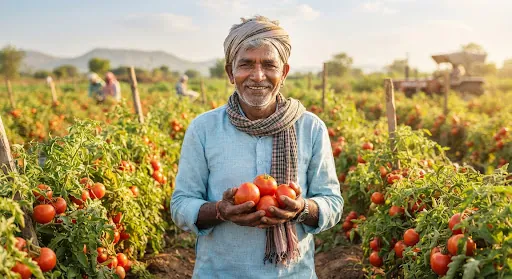
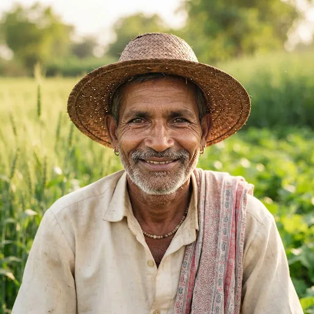
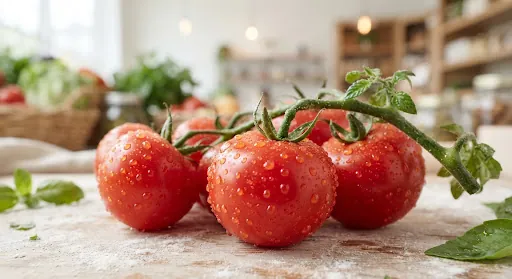
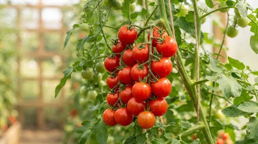
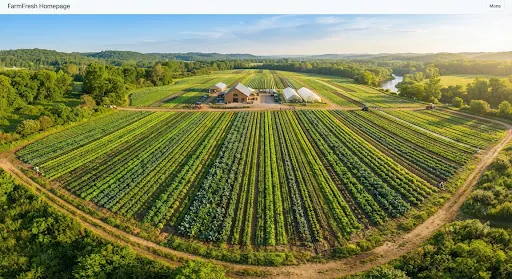
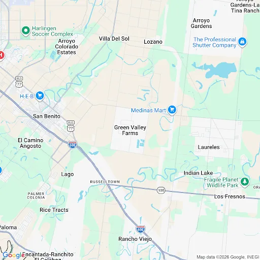

Swiggy FarmFresh
A trust-first produce vertical for Instamart — provenance you can check, not marketing you have to believe.
FarmFresh isn't a new app. It's Instamart's existing produce catalog with one layer added: who grew it, when, how it was checked, and what happens if it's wrong. Built from the FarmFresh Trust Experience design source — 14 componentized screens replacing an earlier 11-screen static pass.
Trust exists. It's filed as legal disclosure, not product evidence.
A produce listing today has no harvest date, no farmer, no inspection record above the fold. Everything below is what changes.
| Today | FarmFresh |
|---|---|
| Provenance | Two "Show more" taps deep, written for auditors |
| Trust claim | "Chemical Free" label, unverifiable |
| Checkout | Generic delivery fee |
| Tracking | Delivery status, ends at "Delivered" |
| Provenance | 3-stat bar, above the fold, every PDP |
| Trust claim | Scored 96/100, attributed to a named inspector |
| Checkout | Named, itemized Farmer Support Fee |
| Tracking | Live freshness + full seed-to-door journey |
All targets directional — unvalidated.
Nine insights. Each one is a screen decision, not an observation.
Badges don't survive scrutiny. A source, an inspector, and a fee line item do.
Trust is the differentiator. Checkout is where it's tested.
Speed and price get matched within a quarter. A verified farm, a named inspector, and a score don't — if they survive all the way to payment.
The path, in order:
Discovery
Enter, browse harvest
Selection
Filter, open product
Trust layer
Farmer, journey, score
Commitment
Priced checkout
Fulfillment
Confirm, track live
Retention
Weekly habit
System rigor
Edge cases, tokens
The system, at a glance
14 screens, grouped by act. Orange nodes are new in this revision — replacing what used to be a single Farm Info Dashboard.
Intercept a shopper inside a home screen that already has Grocery, Dairy, Snacks on it.
Instamart entry
The chip sits alongside Grocery, Dairy, Snacks — a section of Instamart, not a campaign.
Design rationale & business case
Most shoppers never seek a new vertical; interception has to happen where they already are, in a pattern they already trust.
Converts passive scroll into a qualified visit to a higher-margin vertical with zero incremental IA cost.
- 1Trust signalVerification promised on the banner
The first line a shopper reads is a claim the next 13 screens have to prove.
- 2InteractionInstamart's own orange CTA
No new pattern to learn — same button as every Instamart promo.
- 3PlacementPeer category chip
Sits beside Grocery, Dairy, Snacks — a section of Instamart, not a campaign.


FarmFresh home
"Meet the Farmers" — circular portraits, tap-through to full profiles — loads above the fold.
Design rationale & business case
First proof the entry banner's promise is real; lets a shopper start from a trusted person, not just a wanted product.
Subscribe & Save sits after discovery, not before — offered once, not pitched cold.
- 1Trust signalProof strip under the title
Two promises stated before a single product appears.
- 3New sectionFarmers above the fold
Circular portraits tap through to full profiles — start from a person.
- 2Content orderHarvest-first shelf
What was picked today leads — not an A–Z catalog.
- 4PlacementSubscription after discovery
Offered once, after browsing — never pitched cold.
The PDP carries five kinds of evidence without becoming unreadable.
Category listing
Same green check used for every verified signal across the system — one vocabulary, not one per screen.
- 1ReuseExisting chip filters
All · Vegetables · Fruits — Instamart’s pattern, no new taxonomy.
- 2Trust signalFarm distance on every card
Same green check as every verified signal — one vocabulary system-wide.
- 3ConsistencyRepeated, not decorated
The signal appears identically on every card, so it reads as data.
Search & filters
Bottom-sheet pills, not a settings page — a distance is picked the way an ETA is picked.
- 1Filter orderDistance first
Picked the way an ETA is picked — pills, not a slider.
- 3Trust signalCertifications as checks
Organic and pesticide-free are filterable claims, not badges.
- 2New filterHarvest window
Today / This week — a filter no grocery app offers today.
- 4InteractionBottom sheet, one action
No price filter first — freshness criteria lead the sheet.

Heirloom Tomatoes
Vine-ripened, hand-picked this morning.
Product detail
Quick-scan by default; "See the Full Journey" and "Why You Can Trust This" break the accordion pattern deliberately.
Design rationale & business case
The direct answer to a PDP with no provenance above a "Show more" tap.
Two dedicated exits let the PDP measure which evidence — crop story or audit trail — actually moves a decision.
- 1Trust signalFreshness stamp above the title
Harvest time is the first fact on the PDP, not buried below.
- 3StructureCollapsed accordions
Quick-scan by default; detail one tap away.
- 2AttributionFarmer + distance
A named grower with a tap-through, right under the price.
- 4ChangedTwo doors to go deeper
Breaks the accordion pattern on purpose — and measures which evidence converts.
A person, a timeline, a number — the case for choosing FarmFresh over an unverified alternative.
Lakshmi Devi
✓Third-generation farmer growing heirloom tomatoes and leafy greens on 6 acres, using drip irrigation to cut water use by half.


Farmer profile
Years farming, specialty, verification — stated as a stat strip, not a legal footer.
- 1AttributionPortrait and name lead
A real person, verified tick beside the name.
- 3ContentMethods as tags
Organic, no pesticides, drip irrigation — scannable claims.
- 2ChangedStat strip, not a legal footer
KYC status sits where a seller GST number used to be.
- 4FlowExit to Farm journey
Leads straight into the new screen 07.
Farm journey — new in v2
Runs forward, not backward from "Delivered" — the crop's story, not a status log to reverse.
- 1New screenDated milestones
Runs forward in the order it happened — real dates, not statuses.
- 3FreshnessHarvest anchors freshness
“This morning” is the number that matters most.
- 2Trust signalPractice at the stage it happened
Growing method attached to the moment, not a separate list.
- 4FulfilmentEnds at your door
Cold chain is the last step of the crop’s story.
Verified in-person. FSSAI confirmed, renewed annually.
12-point check by Field Officer Priya R. before dispatch.
Lakshmi Devi, KYC-verified, paid directly — no middlemen.
Harvest-to-delivery time · cold-chain adherence · inspection results.
Trust & verification — new in v2
Five attributed cards close into one dark, high-contrast score card — 96/100, formula stated in one line.
Design rationale & open risk
Naming the inspector — "Priya R." — is a deliberate escalation past anonymous "Quality Checked" copy.
- 1New screenEvery claim attributed
In-person visit, FSSAI licence, renewal cadence — stated.
- 3Trust signalPaid directly
KYC plus payment route — no middlemen.
- 2ChangedThe inspector is named
“Priya R.” replaces anonymous “Quality Checked” copy.
- 4Open riskPremium becomes a number
96/100 with its formula in one line — needs calibration before ship.
New in this revision — the screen that decides whether trust was marketing or a real commitment.
Cart & checkout — new in v2
Delivery slots carry harvest timing forward; a Farmer Support Fee sits itemized, not folded into margin.
Design rationale & open question
The Freshness Guarantee sits above the delivery slot — a shopper commits knowing the failure mode before they need it.
- 1AttributionFarmer on every line item
The grower’s name carries through to the receipt.
- 3ChangedSlots carry harvest timing
“Harvested this morning” attached to each delivery window.
- 2PlacementGuarantee before the slot
The failure mode is known before a shopper commits.
- 4NewItemized Farmer Support Fee
₹10 shown as its own line. Open question: opt-in or fixed.
A real name, a real vehicle, a cold-chain claim — not just an ETA.
Order Confirmed
Harvested this morning. Packed fresh, arriving today.
Order confirmation
CTA reads "Track Freshness," not "Track Order" — the funnel's vocabulary stays consistent to the last screen.
- 2ContinuitySlot carried forward
The window chosen at checkout, echoed back.
- 1ChangedRestates freshness
Confirmation repeats the promise, not just “success”.
- 3Copy“Track Freshness”, not “Track Order”
Funnel vocabulary stays consistent to the last screen.

Freshness tracking
Delivery partner shown by name, vehicle, plate — the same attribution vocabulary as farmers, extended to the last mile.
- 1ReuseStandard live map
Answers “where” with the pattern shoppers already know.
- 3NewIs it still fresh, right now
Cold-chain status answers freshness, not just location.
- 2AttributionRider named like farmers
Name, vehicle and plate — same attribution, last mile.
A trust layer this expensive only pays back if a shopper comes back.
Weekly subscriptions
Batches harvest requests to a predictable cadence — an operational win disguised as convenience.
- 1Trust signalReassurance first
Skip anytime and farmer-direct pricing before any plan.
- 3NewDelivery-day picker
Batches harvest requests into a predictable cadence.
- 2PricingPlans priced per week
Family Box anchors the choice with a clear weekly price.
Nothing here sells. It's what makes the other twelve buildable.
Empty, loading & error states — new in v2
A concept that only shows the happy path can't be estimated by engineering.
- 1NewEmpty state with a way out
Every dead end offers the next step.
- 3NewError with retry
Plain-language failure plus one recovery action.
- 2NewLoading skeleton
Layout holds its shape while data arrives.
Component library — new in v2
Orange is #FC8019 — Instamart's real product orange, not the brand book's #FF5200 marketing spec.
- 1SystemProduct orange #FC8019
Instamart’s real UI orange, not the #FF5200 marketing spec.
- 2SystemReusable trust chips
Verified Farmer, Organic, Harvested — one set used on every screen.
What gets tested before this ships
Nothing here has been tested. This is the plan, and the two riskiest bets.
| Hypothesis | How we'd measure it | Risk if wrong |
|---|---|---|
| A computed score beats badges alone | Time-to-add, PDP→Trust click-through | Unexplained 96/100 reads as theater |
| A priced fee reads as trust, not tax | A/B vs. an unnamed platform fee | "Am I paying twice for one promise?" |
| Forward journey reads further than reverse tracking | Scroll depth, time-on-screen | Low — worst case, reverts to reverse order |
Next iteration: make the Freshness Score tappable to its formula breakdown directly on the Trust screen — the number needs to survive a skeptical tap, not just a caption.
An extension of Instamart, not a new category to maintain
Premium AOV lever competitors can't fast-follow on price.
A checkable "why trust this," carried to a priced checkout.
Named, verified, paid a visible fee — not an anonymous SKU.
Documented components — estimable, not just presentable.
Customer-obsession where trust, not speed, is the product.
Freshness Score as a platform-level trust primitive.
Shipped in this revision
| Phase | Focus |
|---|---|
| Pilot | 1–2 cities, validate harvest-data pipeline, calibrate the score. |
| Expand | Extend the component library to Meat, Milk, Dairy. |
| Bridge | QR-on-package, linking a delivered order to its Farm Journey. |